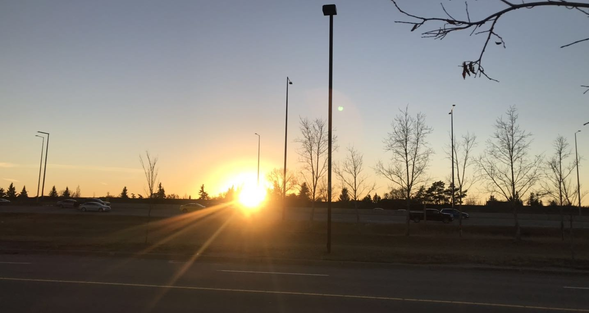

Zhanpeng Shao
Center for Biometrics and Security Research (CBSR)
National Laboratory of Pattern Recognition (NLPR)
Institute of Automation, Chinese Academic of Sciences (CASIA)
No.95 Zhongguancun East Road, Haidian District, Beijing, China


